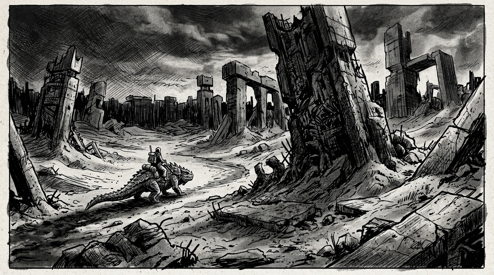
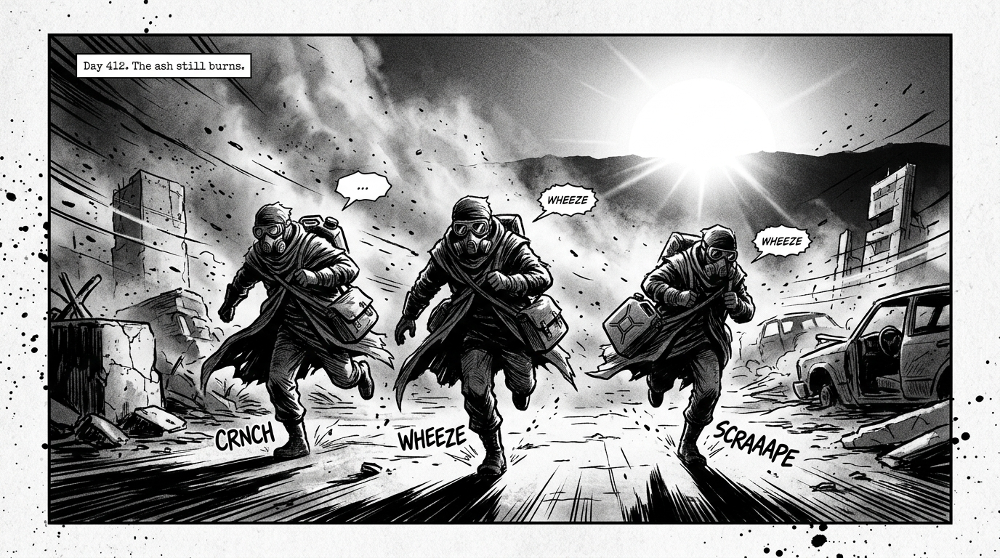
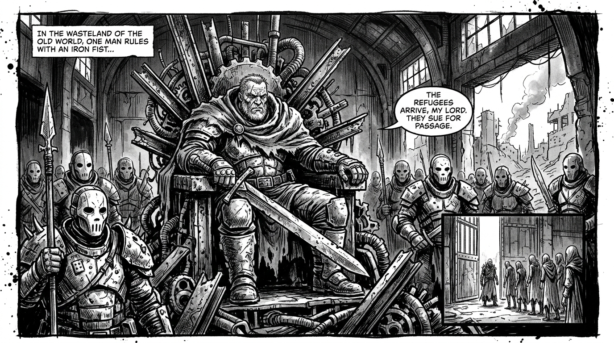
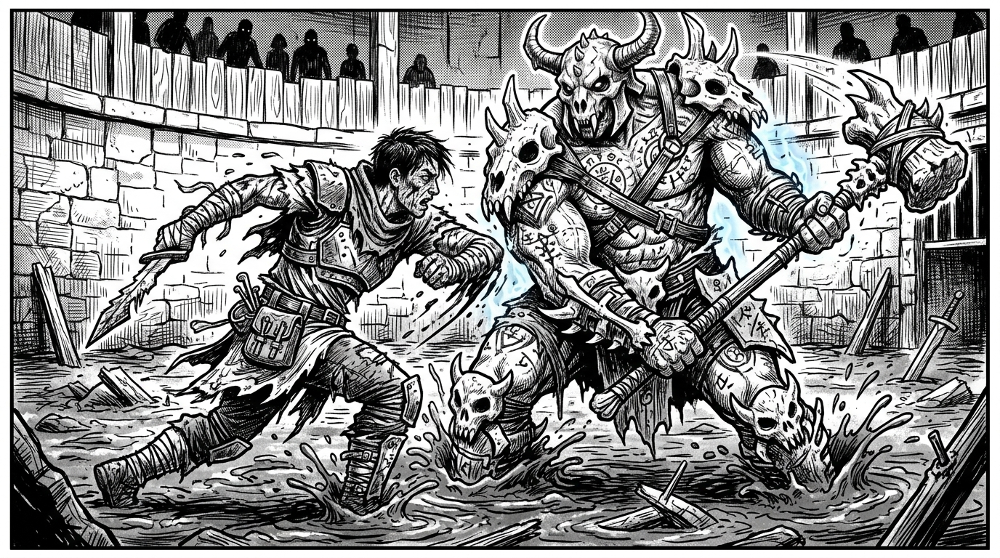
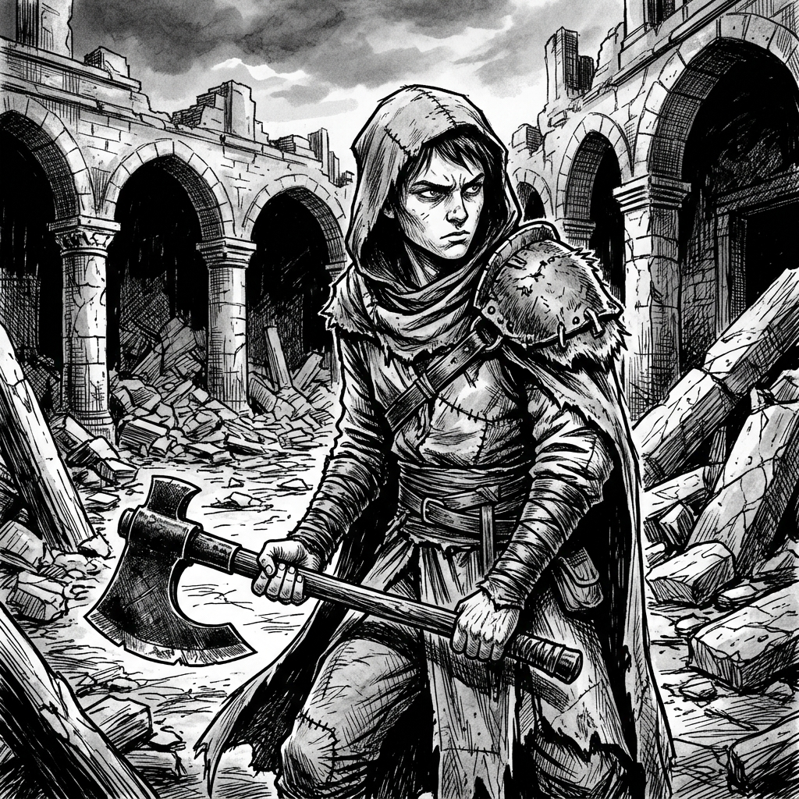
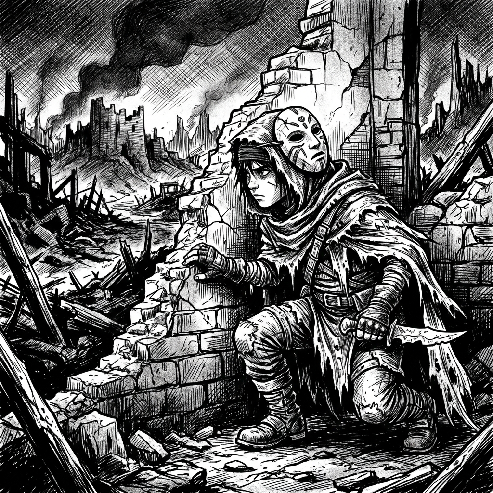
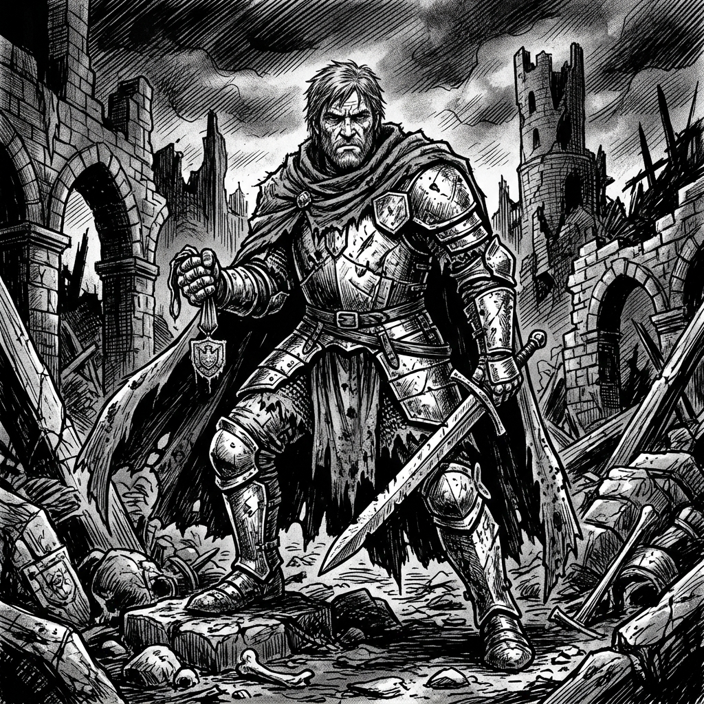
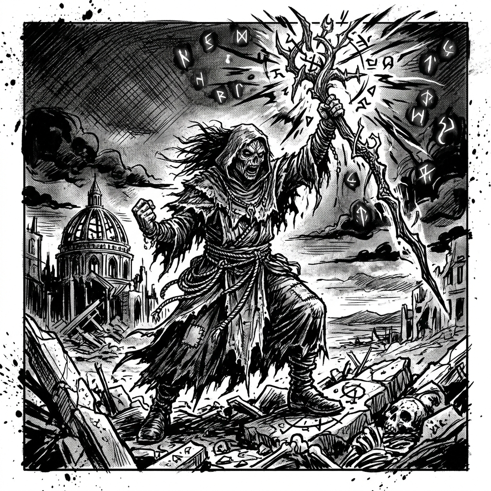
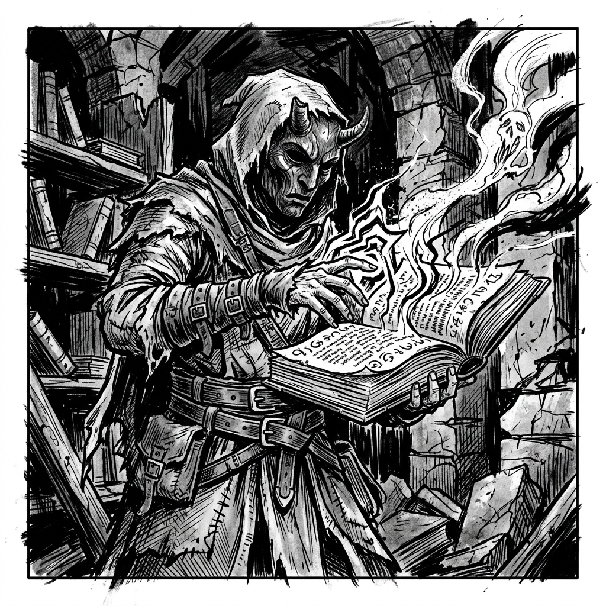
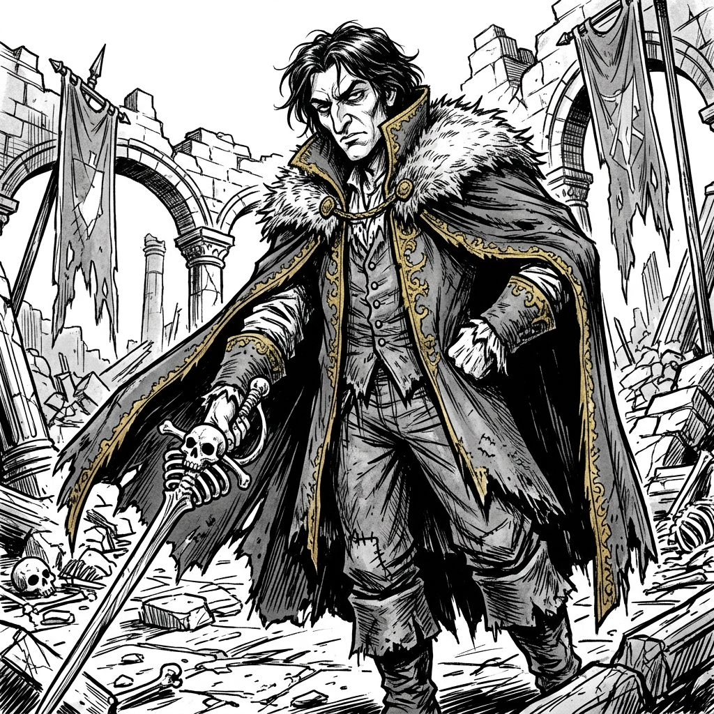

The world forged in Ten Earth Shattering Blows is cruel, unforgiving, and scorched beneath an incinerating sun. You are not legendary heroes or untouchable mages; you are hungry scavengers scraping through ruins of an obliterated civilization, armed with salvaged iron and stubborn grit.
What You Need to Play
To venture forth, you need 1 Character Sheet per player, pencils, and scrap paper. Most importantly, you will need multiple full sets of polyhedral dice (d4, d6, d8, d10, d12, d20). Greed will tempt you to roll often—keep them within arm's reach.
Referee Philosophy
The players are the driving force. The Referee describes the harsh environment, adjudicates intent, and enforces consequences, but the players roll all the dice. The wasteland is completely indifferent to survival: brazen ingenuity is rewarded, while hesitation invites disaster.
Everything is Combat
Passive skill checks do not exist. Any barrier—a rusted bulkhead door, a boiling toxic geyser, a hostile sentry line, a high-stakes bribe, or a ravenous wasteland beast—is treated as an active adversary with Hit Points (HP). Overcome it by breaking its HP before its lethal Counterattacks break you.
Anatomy of an Obstacle
Difficulty Threshold: The minimum total sum required to score a hit. Low (14+), Medium (17+), Severe (20+).
Permitted Attributes: The Referee assigns 1 Physical and 1 Mental attribute viable for the task.
Health Pool (HP): Minor hazard (10-15 HP), Serious confrontation (20-30 HP), Apex threat (40-60+ HP).
Counterattack: What the obstacle does when players Bust or hesitate (Direct damage, lost gear, toxic exposure).
The Escalation Clock
Every turn spent without reducing an obstacle's HP allows the environment to sour. The sun rises higher, the mud thickens, and survival narrows.
Page 2 of 7 • Conflict Resolution & Health

Player Attributes
Each recruit possesses 6 Attributes split into two domains. Physical: Strength (STR), Agility (AGI), Constitution (CON). Mental: Wits (WIT), Knowledge (KNO), Presence (PRE).
Each attribute is tied to a polyhedral die. In Blast or Bust, die size is inverse to competence:
Mastery→→→→Incompetence
Conflict Resolution Sequence
When acting against an obstacle, players execute this sequence:
Declare Approach: Select an allowed Physical or Mental attribute matching your tactic.
Chain Rolls: Roll your Attribute Die. Record the sum. Continue rolling additional dice of that type until you meet or exceed the Difficulty Threshold.
Push or Hold: Once the threshold is met, you may choose to stop and strike, or risk rolling more dice to accumulate heavier damage—until you bust (> 21).
The Rule of 21: Roll Outcomes
Success (Threshold to 21): Sunder the obstacle's HP and negate its Counterattack for this round.
Bust (> 21 - Overreach): Critical failure! Deal 0 damage and immediately suffer the obstacle's Counterattack.
Natural 21 (Epic Strike): Total mastery. Roll maximum damage automatically, or trigger a dramatic environmental twist.
Damage & Support
On a successful strike, gather all dice rolled in that turn's chain and reroll them together: their sum is subtracted directly from the obstacle's HP pool.
Smaller dice grant granular control, allowing players to stack 4 or 5 dice safely before nearing 21. When rerolled for damage, these multiple dice yield crushing totals!
The Support Action
An ally may expend their turn to Support the active player. If the active player Busts (> 21), instantly discard the last die rolled. Resume from the prior total and decide immediately to hold or push on!
Health, Stress & Death
Recruits track two survival pools:
Physical Points (HP): Flesh, bones, armor. At 0 HP, you become Incapacitated. Forbidden from actions using STR, AGI, or CON.
Mental Points (MP): Sanity, nerve, morale. At 0 MP, you become Broken. Forbidden from actions using WIT, KNO, or PRE.
True Death: Occurs strictly when both HP and MP reach 0 simultaneously. So long as one pool remains, a recruit clings to life!
Tactical Recovery
Breathing dust in a moment of calm restores 1d4 points to the pool of your choice. True healing requires sanctuary, boiled water, and intact bone needles.
Page 3 of 7 • Introductory Adventure: The Well-Fortress
The Well-Fortress
Survivors of the White Ash Wastes: a scorching midday sun rises to flay the flesh from your bones. Your only salvation looms on the scorched horizon: the Well-Fortress, a brutalist bastion of rusted iron and desperate violence.

Act I: Racing the Sun
Incandescent dawn crests behind you, turning air into searing poison. You must sprint through the gorge toward the fortress shadow, dodging boiling acid geysers and unstable Old World concrete slabs buried under ash.
Obstacle: Ash Waste (HP 25 | Severe 20+) Viable Approaches: AGI (sprinting, sliding under crumbling rubble), WIT (spotting solid bedrock trails). Counterattack: Seared Lungs. Blinding heat flays exposed skin: 1d4 damage to the entire party.
Act II: The Maw of the Bastion
You collapse gasping under the iron portcullis. Facing you is the Regent's Guard: emaciated thugs draped in heavy scrap plate. From an iron parapet above, the Regent sneers. Entry has a price, and your lives are worth nothing unless proven in blood.
Obstacle: The Guards & the Regent (HP 30 | Low 14+) Viable Approaches: PRE (furious intimidation or desperate bartering), STR (shoving through the spear line). Counterattack: Cruel Bastion. Beaten back or scalded by boiling slag: 1d6 damage (player chooses HP or MP).


Act III: The Mud Rite
You have earned the "privilege" to fight for sanctuary. Shoved through iron grates into a sunken arena flooded with viscous mud and blood, the pit gate creaks open. Out lumbers the Pit Champion: a towering horror bolted into crude bone plating.
Obstacle: The Pit Champion (HP 30 | Medium 17+) Viable Approaches: CON (grappling in choking mud), KNO (identifying weak joints in the bone plating). Counterattack: Viscous Crush. Smashed into the muck: 1d4 damage plus suffocation (-2 additional HP).
Page 4 of 7 • Referee Screen (Quick Reference Vademecum)
Blast or Bust • Referee Screen
Quick Rules Reference • Module 0: Core Engine
I • The Rule of 21 & Resolution
Turn Sequence (All is Combat)
Declare Approach: Pick an allowed attribute (1 Physical or 1 Mental).
Chain Rolls: Roll attribute die and sum total. Continue rolling until you reach or beat the Difficulty Threshold.
Push Your Luck: Once past threshold: hold and strike, or risk rolling additional dice for bigger damage. Over 21 is a Bust!
Roll Outcomes
Result
Mechanical Effect
Success (Threshold → 21)
Hit threshold and hold. Deal damage to obstacle HP and cancel its Counterattack this round.
Bust (> 21)
Critical fail. Deal 0 damage and immediately suffer the obstacle's Counterattack.
Natural 21 (Epic)
Flawless triumph! Maximum possible damage rolled automatically, or trigger massive tactical breakthrough.
Damage & Support
Damage: Gather all dice rolled in that chain and reroll them together. Sum is subtracted from obstacle HP.
Support: Ally spends turn helping. If active player Busts (>21), instantly discard the last die rolled: resume from prior total!
II • Attributes, Dice & Health
Dice Mastery Scale
Masteryd6 → d8 → d10 → d12 → d20Incompetence
Golden Rule: Smaller dice (d6) give immense precision when creeping toward 21 and pile up heavy damage dice. The d20 is wild, unpredictable chaos.
The 6 Survival Attributes
Physical
Common Applications
STR (Strength)
Breaching bulkheads, heavy weapons, lifting rubble.
AGI (Agility)
Sprinting wastes, dodging geysers, stealth.
CON (Constitution)
Enduring heat, resisting poison, mud wrestling.
Mental
Common Applications
WIT (Wits)
Navigation, spotting traps, calm in panic.
KNO (Knowledge)
Deciphering Old World ruins, engines, glyphs.
PRE (Presence)
Intimidation, commanding respect, haggling.
Health, Stress & Death
Physical (HP): At 0 HP: Incapacitated. No STR, AGI, or CON actions.
Mental (MP): At 0 MP: Broken. No WIT, KNO, or PRE actions.
True Death: Occurs strictly when both HP and MP hit 0 simultaneously!
III • Quick Obstacle Generator
Quick Difficulty Guide
Difficulty
Threshold
Typical Encounters
Low
14+
Distracted sentry, rusted gate, basic climb.
Medium
17+
Pit brute, blinding ash storm, tense negotiation.
Severe
20+
Scorching midday sun, bone champion, collapsing vault.
Direct Damage: 1d4 (burns/scrapes), 1d6 (crushing blow/humiliation), 1d8 (crippling trauma).
Complications: Gear wear, bogged down in mud (-2 HP & +2 to thresholds), ambient doom clock ticks.
Referee Credo
"Everything is combat. Players roll all the dice. The wastes are indifferent and cruel, but reward brazen grit and desperate audacity."
Page 5 of 7 • Recruits: Warrior & Scout
Character Sheets • Recruits

Warrior
Archetype • Level 1
Physical HealthMax: 18
Current HP:
Mental HealthMax: 9
Current MP:
STRStrength
WITWits
AGIAgility
KNOKnowledge
CONConstitution
PREPresence
Special Item: Scrap Battleaxe
A brutal notched weapon forged from salvage. Gain an immediate bonus turn whenever you deal the killing blow to an obstacle.

Scout
Archetype • Level 1
Physical HealthMax: 14
Current HP:
Mental HealthMax: 13
Current MP:
STRStrength
WITWits
AGIAgility
KNOKnowledge
CONConstitution
PREPresence
Special Item: Ash Sight Cloak
A threadbare tattered shroud that blends into soot. When acting in darkness or from cover, reroll once when you bust.
Page 6 of 7 • Recruits: Knight & Cleric
Character Sheets • Recruits

Knight
Archetype • Level 1
Physical HealthMax: 16
Current HP:
Mental HealthMax: 11
Current MP:
STRStrength
WITWits
AGIAgility
KNOKnowledge
CONConstitution
PREPresence
Special Item: Corroded Medal of Valor
A relic of Old World discipline. Military foes or organized troops suffer half their max HP against your attacks.

Cleric
Archetype • Level 1
Physical HealthMax: 12
Current HP:
Mental HealthMax: 15
Current MP:
STRStrength
WITWits
AGIAgility
KNOKnowledge
CONConstitution
PREPresence
Special Item: Staff of Judgment
A knotted ash staff crowned with bone fetishes. As an action, roll 1d8 to inflict mental damage or terrify foes.
Page 7 of 7 • Recruits: Arcanist & Noble
Character Sheets • Recruits

Arcanist
Archetype • Level 1
Physical HealthMax: 8
Current HP:
Mental HealthMax: 19
Current MP:
STRStrength
WITWits
AGIAgility
KNOKnowledge
CONConstitution
PREPresence
Special Item: Ash-Bound Grimoire
You are the only one who can change reality by fighting it.

Noble
Archetype • Level 1
Physical HealthMax: 10
Current HP:
Mental HealthMax: 17
Current MP:
STRStrength
WITWits
AGIAgility
KNOKnowledge
CONConstitution
PREPresence
Special Item: Frayed Aristocratic Doublet
Tattered rags of lost supremacy. In social disputes and negotiations, the Difficulty Threshold is fixed at "Low (14+)" against commoners.